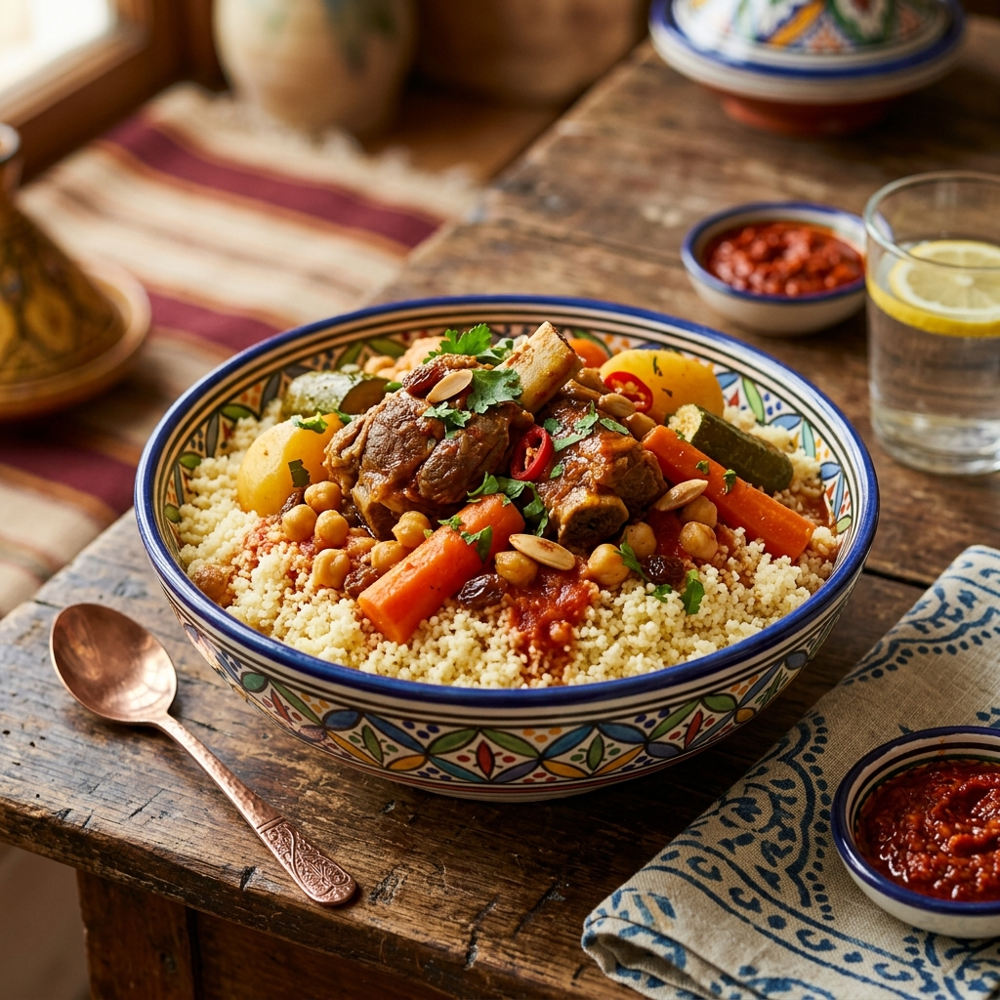
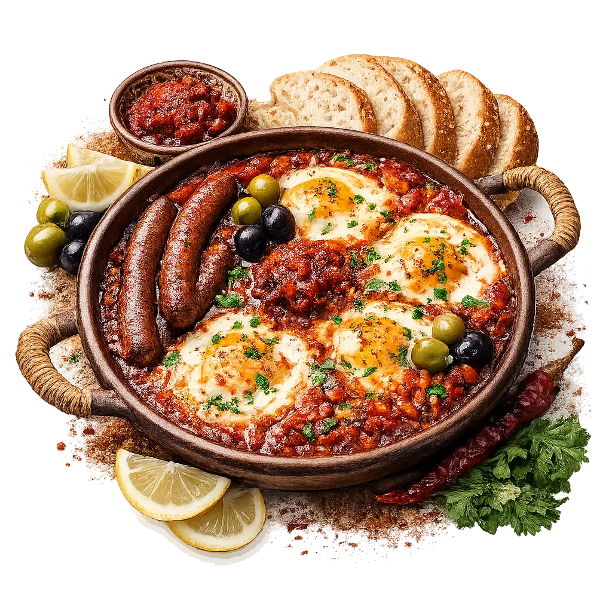

Cuisine Tunisienne Authentique
Restaurant Tunisien Traditionnel
Niché au cœur de La Marsa, Coin Margoum vous invite à un voyage gustatif inoubliable...


Le choix du chef
Nos Plats Signature

Couscous Royal
28 DTSemoule fine cuite à la vapeur d'un bouillon parfumé, servie avec de la viande d'agneau tendre, des pois chiches et des légumes frais de saison.

Riz Djerbien
22 DTRiz cuit lentement à la vapeur d'eau aromatique, mélangé avec des morceaux de poulet mariné, des épinards, des blettes fraîches et des épices traditionnelles.

Ojja aux Merguez
18 DTUne sauce tomate onctueuse et relevée à la harissa, mijotée avec des poivrons verts, surmontée d'œufs pochés coulants et de saucisses merguez grillées.
Avis Google
Des clients qui reviennent pour le goût
Nous localiser
Contact & Accès
Notre Adresse
11 Rue Mongi Slim, La Marsa 2076, Tunisie
Quartier chaleureux et facile d'accès.
Horaires d'Ouverture
Mardi au Dimanche : 12h00 - 23h00
Lundi : Fermé (Repos hebdomadaire)